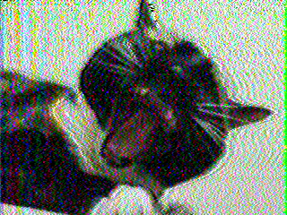

Slow Scan TV aka (SSTV) is an analog signal that can be used to send images via audio tones. Below is an example of what the signal sounds like and an image decoded from that same signal. The image is built line by line starting at the top of the image and going down to the bottom.

This method of picture transmission is used heavily in the ham radio community. The International Space Station and other man-made satellites are also known to take part in SSTV transmissions from time to time.
I got this image from ISS on 12/30/24 during a night pass over my house. ISS used the PD120 mode to generate the signal. The 120 means 120 seconds, it took that long to send/decode this image. The number at the end of most SSTV modes usually corresponds to how long it takes to send an image. The longer modes tend to have better quality, at the cost of taking more time to encode/decode. The picture of Cali was using the mode Robot36 and it took 36 seconds to send. There are even faster modes like Robot8 but again you sacrifice quality with faster speeds.
Below are links to apps that I have used with success to encode/decode SSTV signals.
Robot36 - SSTV Image Decoder by Ahmet Inan. To decode images on android.
SSTV Encoder by Olga Miller. To encode images on android.
MMSSTV by JE3HHT - Makoto Mori. To encode/decode images on Windows.
SSTV Slow Scan TV by Black Cat Systems. To encode/decode on iPhone.
If you know of any other software for SSTV or want to share some SSTV stories send an email to webmaster@potatomatrix.com